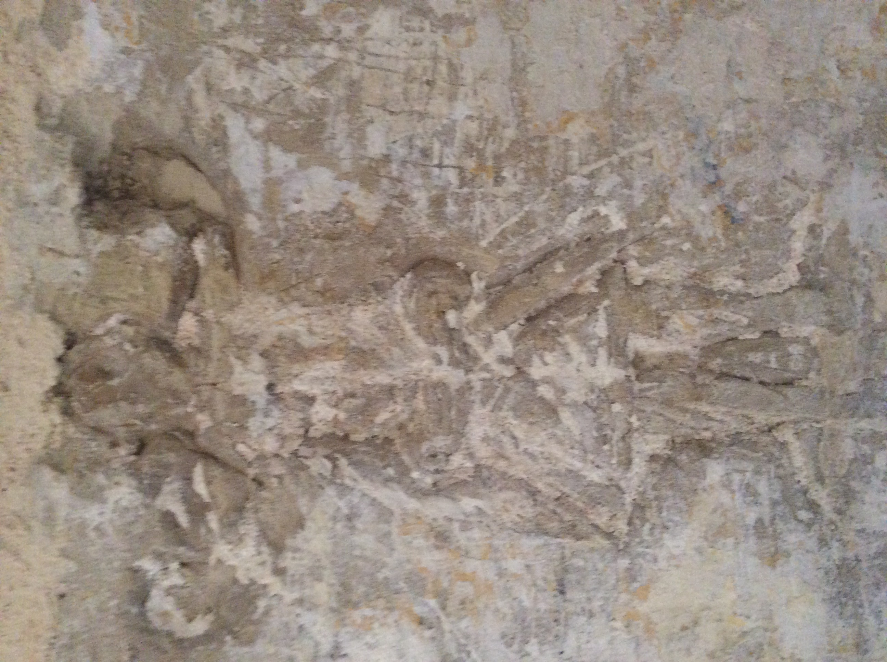
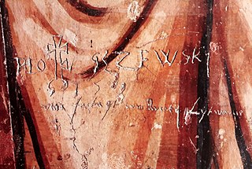
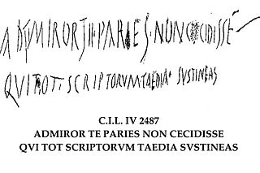
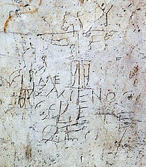
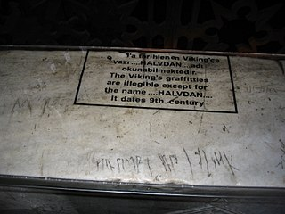

Figure graffito, similar to a relief, at the Castellania, in Valletta The term graffiti referred to the inscriptions, figure drawings, and such, found on the walls of ancient sepulchres or ruins, as in the Catacombs of Rome or at Pompeii. Use of the word has evolved to include any graphics applied to surfaces in a manner that constitutes vandalism.
The only known source of the Safaitic language, a form of proto-Arabic, is from graffiti: inscriptions scratched on to the surface of rocks and boulders in the predominantly basalt desert of southern Syria, eastern Jordan and northern Saudi Arabia. Safaitic dates from the first century BC to the fourth century AD.
ETYMOLOGY
Both "graffiti" and its occasional singular form "graffito" are from the Italian word graffiato ("scratched"). "Graffiti" is applied in art history to works of art produced by scratching a design into a surface. A related term is "sgraffito", which involves scratching through one layer of pigment to reveal another beneath it. This technique was primarily used by potters who would glaze their wares and then scratch a design into it. In ancient times graffiti were carved on walls with a sharp object, although sometimes chalk or coal were used. The word originates from Greek γράφειν — graphein — meaning "to write."
MODERN-STYLE GRAFFITI
The first known example of "modern style" graffiti survives in the ancient Greek city of Ephesus (in modern-day Turkey). Local guides say it is an advertisement for prostitution. Located near a mosaic and stone walkway, the graffiti shows a handprint that vaguely resembles a heart, along with a footprint and a number. This is believed to indicate that a brothel was nearby, with the handprint symbolizing payment.
The ancient Romans carved graffiti on walls and monuments, examples of which also survive in Egypt. Graffiti in the classical world had different connotations than they carry in today's society concerning content. Ancient graffiti displayed phrases of love declarations, political rhetoric, and simple words of thought, compared to today's popular messages of social and political ideals. The eruption of Vesuvius preserved graffiti in Pompeii, which includes Latin curses, magic spells, declarations of love, alphabets, political slogans, and famous literary quotes, providing insight into ancient Roman street life. One inscription gives the address of a woman named Novellia Primigenia of Nuceria, a prostitute, apparently of great beauty, whose services were much in demand. Another shows a phallus accompanied by the text, mansueta tene ("handle with care").
Disappointed love also found its way onto walls in antiquity: Quisquis amat. veniat. Veneri volo frangere costas fustibus et lumbos debilitare deae. Si potest illa mihi tenerum pertundere pectus quit ego non possim caput illae frangere fuste? Whoever loves, go to hell. I want to break Venus's ribs with a club and deform her hips. If she can break my tender heart why can't I hit her over the head? —CIL IV, 1824.
Ancient tourists visiting the 5th century citadel at Sigiriya in Sri Lanka scribbled over 1800 individual graffiti there between 6th and 18th centuries. Etched on the surface of the Mirror Wall, they contain pieces of prose, poetry, and commentary. The majority of these visitors appear to have been from the elite of society: royalty, officials, professions, and clergy. There were also soldiers, archers, and even some metalworkers. The topics range from love to satire, curses, wit, and lament. Many demonstrate a very high level of literacy and a deep appreciation of art and poetry. Most of the graffiti refer to the frescoes of semi-nude females found there. One reads:
Wet with cool dew drops fragrant with perfume from the flowers came the gentle breeze jasmine and water lily dance in the spring sunshine side-long glances of the golden hued ladies stab into my thoughts heaven itself cannot take my mind as it has been captivated by one lass among the five hundred I have seen here.
Among the ancient political graffiti examples were Arab satirist poems. Yazid al-Himyari, an Umayyad Arab and Persian poet, was most known for writing his political poetry on the walls between Sajistan and Basra, manifesting a strong hatred towards the Umayyad regime and its walis, and people used to read and circulate them very widely.
LITERACY OR ILLITERACY OFTEN REVEALED IN GRAFFITI
Historic forms of graffiti have helped gain understanding into the lifestyles and languages of past cultures. Errors in spelling and grammar in these graffiti offer insight into the degree of literacy in Roman times and provide clues on the pronunciation of spoken Latin. Examples are CIL IV, 7838: Vettium Firmum / aed[ilem] quactiliar[ii] [sic] rog[ant]. Here, "qu" is pronounced "co." The 83 pieces of graffiti found at CIL IV, 4706-85 are evidence of the ability to read and write at levels of society where literacy might not be expected. The graffiti appear on a peristyle which was being remodeled at the time of the eruption of Vesuvius by the architect Crescens. The graffiti were left by both the foreman and his workers. The brothel at CIL VII, 12, 18–20 contains more than 120 pieces of graffiti, some of which were the work of the prostitutes and their clients. The gladiatorial academy at CIL IV, 4397 was scrawled with graffiti left by the gladiator Celadus Crescens (Suspirium puellarum Celadus thraex: "Celadus the Thracian makes the girls sigh.")
Another piece from Pompeii, written on a tavern wall about the owner of the establishment and his questionable wine:
Landlord, may your lies malign Bring destruction on your head! You yourself drink unmixed wine, Water [do you] sell [to] your guests instead.
It was not only the Greeks and Romans who produced graffiti: the Maya site of Tikal in Guatemala contains examples of ancient Maya graffiti. Viking graffiti survive in Rome and at Newgrange Mound in Ireland, and a Varangian scratched his name (Halvdan) in runes on a banister in the Hagia Sophia at Constantinople. These early forms of graffiti have contributed to the understanding of lifestyles and languages of past cultures.
Graffiti, known as Tacherons, were frequently scratched on Romanesque Scandinavian church walls. When Renaissance artists such as Pinturicchio, Raphael, Michelangelo, Ghirlandaio, or Filippino Lippi descended into the ruins of Nero's Domus Aurea, they carved or painted their names and returned to initiate the grottesche style of decoration.
There are also examples of graffiti occurring in American history, such as Independence Rock, a national landmark along the Oregon Trail.
Later, French soldiers carved their names on monuments during the Napoleonic campaign of Egypt in the 1790s.[22] Lord Byron's survives on one of the columns of the Temple of Poseidon at Cape Sounion in Attica, Greece.